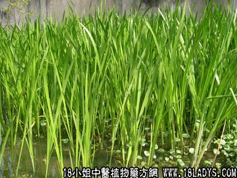

植物名：菖蒲。
生长环境：本品为多年生，簇生草本。常栽培于村落旁的湿地上，亦有野生的。
分布：东亚和中亚各地，我国两广产之。
入药部分：根。
采集期：全年。
自采地点：塘边。
性味：性微温、味辛、气香。
功能：祛风痛窍、温中健胃、化气除痰。
主治、用量和用法：痰肿水肿，配伍用。
验方：（治痰湿水肿方）水菖蒲两、假蒟5钱、入地金牛5钱、大风艾5钱、樟柳头5钱、清水适量，煎洗肿处。
（方解）水菖蒲、大风艾祛风去痰湿；假蒟、入地金牛祛风消肿；樟柳头去湿消肿。合成治风痰湿水肿之方。治肿之在皮在表者，用一外洗，消肿甚秒。或用一熏肛门亦效。但肿之在里者亦可用此方，并将水菖蒲改用4钱、入地金牛改用3钱，其余不改，作为煎服剂，亦效。
（方歌）痰湿风肿洗熏求，水菖蒲入地金牛，假蒟樟头大风艾，煎汤熏洗效即收。